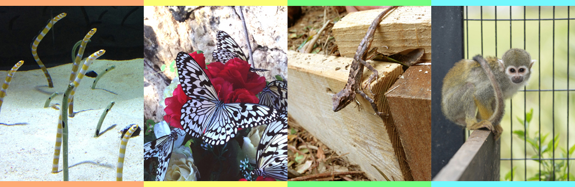

Churaumi Aquarium
The aquarium is located in the northern area of Okinawa. The main tank is 1000 inch wide, 1300 inch tall,400 inch in depth and the acylic plate is 24 inch which is world class thickness. In this tank, three whale sharks, many manta rays, and other fish are swimming. Also, outside of the Aquarium facility, there are flower exhibition center and dolphin show and sometimes taking place for the festival. Most popular event is fireworks show in the summer. When you visit the event, you can enjoy one hour fireworks show.
Famous spot & Activity

Please click the designated area from the options below.
Okinawa Botanical Park
In this facility, big palm tree, tropical and subtropical plants are living, which are from all over the world. The plants in this facility are living in the nature environment, not in the greenhouse.
The facility has English guide staff. Also, making mini botanical glass pot and other hands-on programs are available. In the animal area, there prepares the feeding program for Squirrel monkey and Capybara. The restaurant named “PEACE” in this facility, serves the cuisine made from the flesh vegetables and herb which is lived in this Garden.
Scuba Diving
Thanks to warm climate and environmental friendly policy of the prefecture, Okinawa has been keeping beautiful nature. Scuba Diving is one of popular activity in the island. When you swim in the ocean, you can look tropical fish and coral reef. Many Scuba Diving spot is located in this island, which means each Scuba Diving sopts have individual attractive point. Also other marine activity is available. We are preparing the information so, please wait the next website update.
Chatan Shopping area
This area is designed as California of USA. Restaurant and many events are taking place here. American food, Mexican food, and Italian food shops are located. Also, this area has beach named “sunset beach”. In the summer season, many people will be there and enjoy the beach. This area has other shopping mall named “Depot Island”. The area has fashion, famous brand shop, and original design accessory store. Shopping lover should go to the Depot Island.

Kokusaidori Street
The street is one mile length. There are many shops for the seightseeing prople. If you hungry, the street has many restaurant of Japanese, Chinese, ethnic, American or European. The arcade which is located in the middle of the street, sells fruit, vegetable, and meat etc. It must be interesting experience because you can touch local grocery and people.
If you would like to buy souvenir for friends or family, you can find unique shops. I recommend you visiting this attractive street.